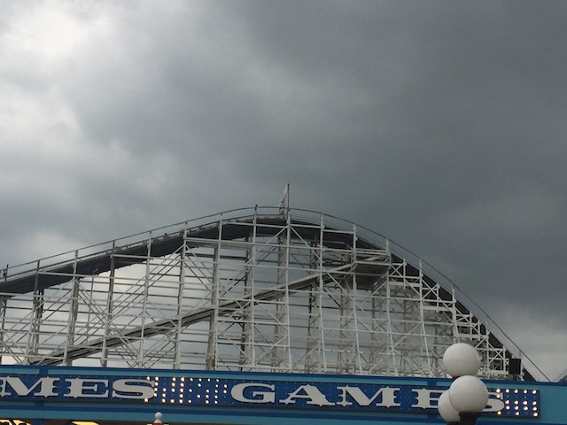
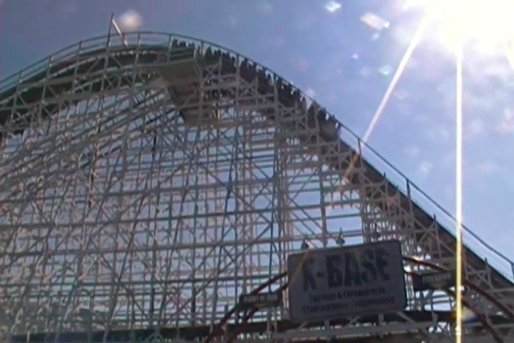
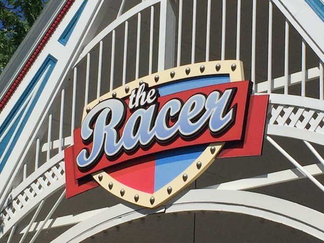
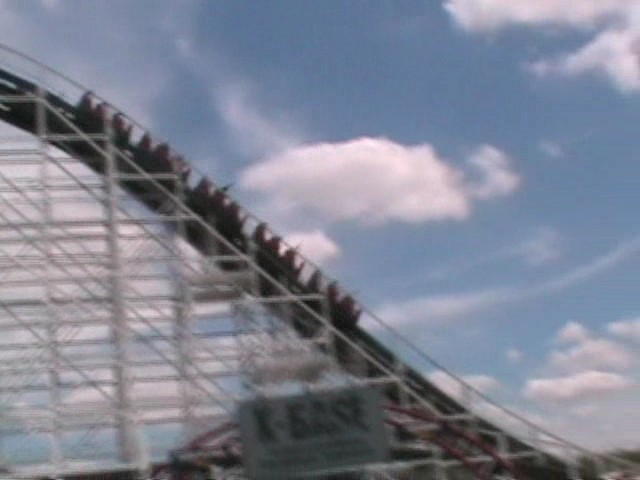

| |
Racer Review

We're here at Kings Island. Today's ride we'll be reviewing is Racer. This is one of the first coasters to come to Kings Island and is the oldest non-kiddy coaster in the park. Anyways, after getting in the trains, we dispatch. We go around a turn and into some straight track. So far, it's nice and relaxing. But anyways, we reach the lifthill. We begin to climb the lifthill, when to your horror, they have showed up. Those assholes on the other side of Racer actually had the guts to challenge us to a coaster race. Well no problem. Anyways, we accept and begin the coaster race. After shouting random insults such as "YOU ARE THE SADDEST GROUP OF PEOPLE I EVER MET IN MY LIFE!!! MY PET TURTLE COULD KICK YOUR ASS!!!", you shake fists at each other and declare yourselves enemies. Then you can't help but angrily glare at the other side. You begin to hate everything about them. The way they dress, the way they talk, the way the ride on the wrong side of Racer. But soon enough, we make it to the top. As we slowly crest the lifthill, we look at the other side and give them the nastiest glare you can possibly make. Then as we head down the first drop, you begin to notice that the other side is smiling. Poor pathetic fools just sitting and enjoying the ride. Little do they know that we will kick their ass and ever so epicly defeat them. So let them have their precious little bit of fun. For soon they will suffer. Soon they will be humiliated. Soon they will feel our wrath. But, to do that, we must shred through this course. Anyways, onto these two small pathetic airtimeless hills. After that's over, we rip over another big hill. But at this point, we split up from those assholes. We are going this way and they are going that way. And as we all learned in kindergarten, This Way > That Way. And that's when there aren't any wrong side of Racer assholes that way. So now that way is even worse. As we head this way, we rip through another small hill. There's no airtime. But that's good. Airtime is a distraction that will destroy us. We've got to focus on the coaster race. Then we head into the turnaround. As we are turning around, we get everyone on the train to row to make it through the turnaround faster as we drop out of the turnaround. We shred through another non airtime hill, before heading through another hill/turn that sets us back straight. At this point, we get the pleasent sight that we can't see the other jerks on the side of Racer. YAY!!! =) THEY FORFEITED!!! Unfortunetly, they're still in this race, so we're racing this coaster race blind. =( So put on your war faces, because we're just going to get through these airtimeless hills so that we can taste victory before those assholes get a chance to make it to their own feet. We go through 3 airtimeless hills in a row. The lack of airtime doesn't bother us. We have to focus on the coaster race. Once we win, we'll book a flight to Vancouver and marathon Coaster and then we'll get our proper dose of airtime. We make it through the brake run, and realize, we're surrounded by a wall. We can't see the other side. Our other assumptions were true. They quit. WE WIN BY DEFAULT!!! YAY!!! But you know, a coaster race victory just doesn't taste as sweet when you never actually kicked their ass. But hey, it's better than losing.
6/10
Location: Kings Island
Opened: 1972
Built by: Philadelphia Toboggan Coasters
Last Ridden: June 21, 2021
Racer Photos








Home
|